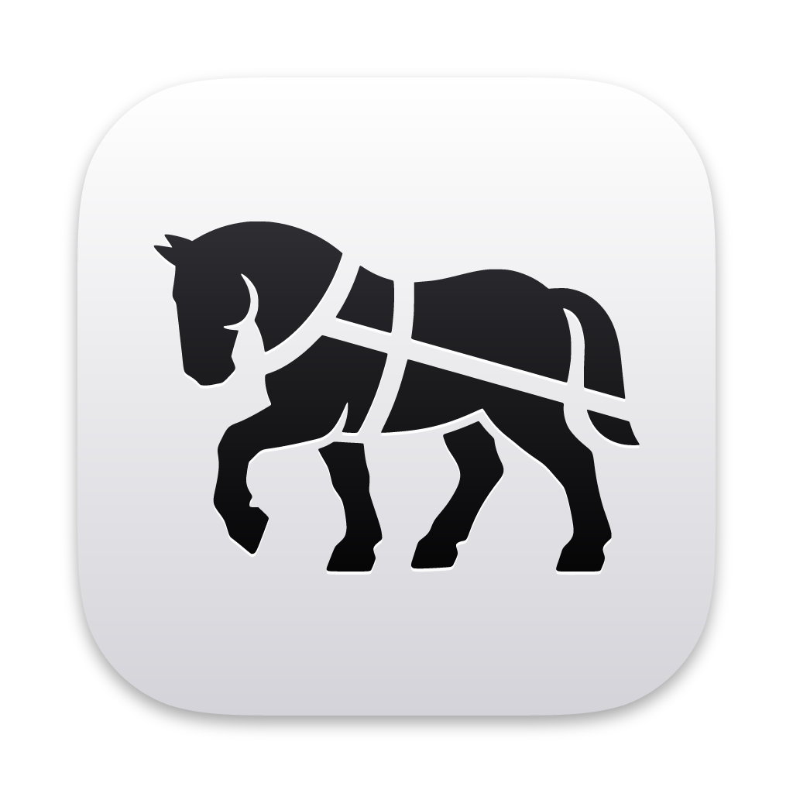
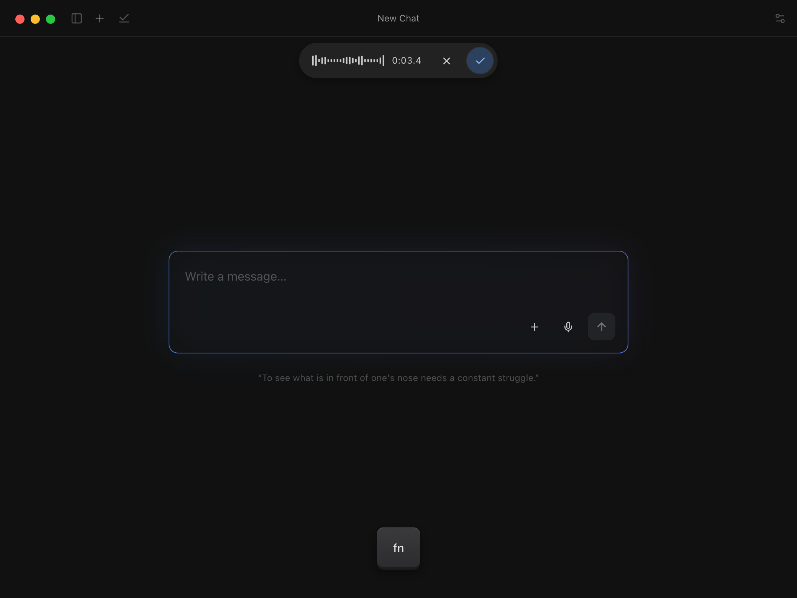
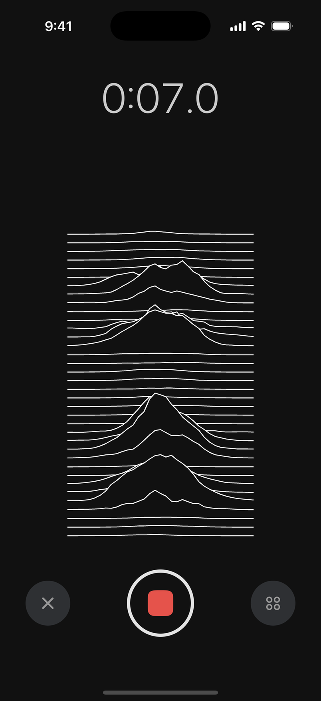
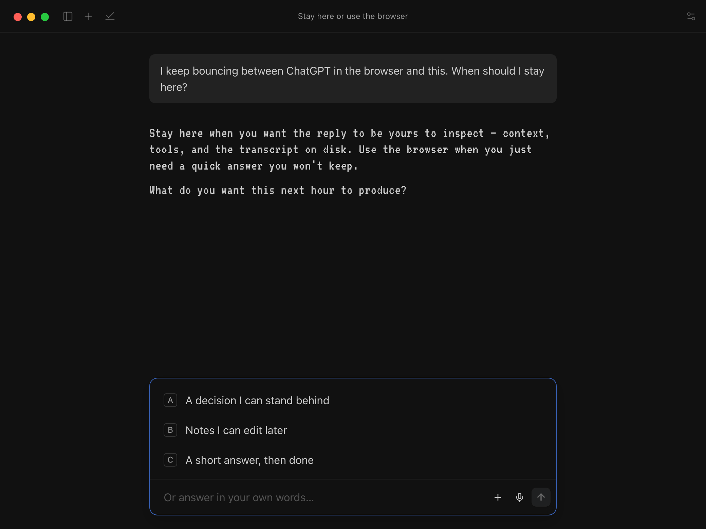

Harness
Harness is a Mac app I made for myself. It started as my attempt to improve on Wispr Flow and other voice dictation tools, and it's grown into a full agent harness: chat, notes, tasks, memory, and tools, with an iPhone app for capturing away from the desk.
It's my test bed for new ideas and interaction patterns. Just as important, all the data is mine. It lives on my Mac, and I can see exactly how it's used and when it isn't.
If you want to try it, download the latest build (Apple silicon, macOS 12 or later) or read the source.
Dictation
Press Fn from any app and say what you're thinking. Apple Speech transcribes it on the Mac, it lands in a conversation, and the reply streams back.
It's built to run for a long time, so I can talk for minutes on end without worrying about losing anything. Nothing in the pipeline is a black box, either. The audio file for every take is saved, even when transcription fails, and I can rerun the transcription on it. The prompt that cleans up the transcript afterward is editable, as is a list of names and terms it should spell my way.

On the phone
The iPhone app does one thing first: record. Open it and it's already listening. The home screen is a single circle, and a lock screen widget opens straight into a take.
A finished take is saved as a capture and synced to the Mac, along with chats and tasks, through a Cloudflare R2 bucket that I own. The phone app isn't on the App Store. It builds from the same repo with Xcode.


Grill mode
Ask to be grilled and it interviews you instead of answering, one question at a time, with the choices in the composer. I reach for it when the hard part is knowing what I think.

Notes
Chat stays short. Longer writing goes into a Markdown note that the model can draft into or suggest edits to, and that I keep editing by hand.

Tasks
Ask in chat or dictate, and tasks land in a plain list. There's nothing to set up and no project hierarchy.